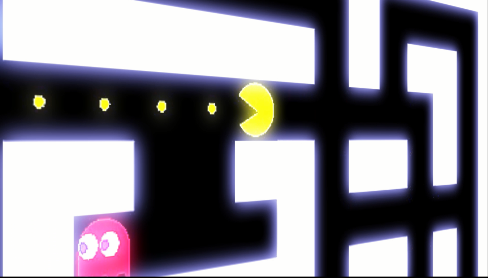

AI For Future equipo Ganador del AI Challenge
Recursos

Para poder ejecutar el juego es necesario tener los siguientes requisitos
- Computador con sistema operativo Ubuntu 16.04
- Tarjeta de desarrollo Arduino Uno (o similar con al menos 4 pines GPIO)
Primero es necesario descargar el repositorio del juego, este funciona con ROS asi que se deben seguir las instrucciones para descargarlo:
Pacman World
Tambien deben descargarse los recursos del controlador y seguir las instrucciones de la documentación:
Pacman Controller
El juego puede jugarse con el controlador manual o con la inteligencia artificial. Para construir el controlador manual se puede hacer un guante con contactos metalicos en la yema de los dedos, o simplemente con 4 pulsadores conectados a los pines del arduino.